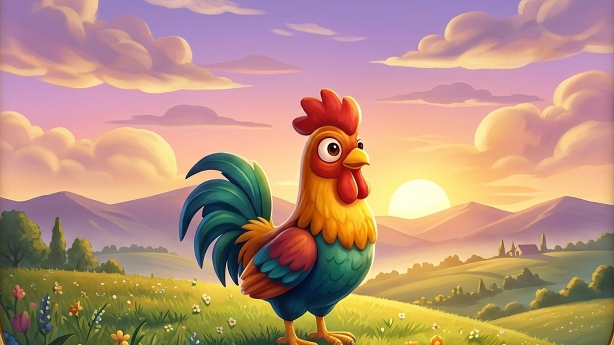

Hai teman-teman! Yuk, berpetualang mengenal lima waktu sholat fardu dan jumlah rakaatnya!
Pilih karakter favoritmu dan ketik namamu agar skormu tercatat ya!
Sentuh salah satu kotak di bawah untuk mulai bermain dan belajar.

Saat fajar terbit di pagi hari
Salat fardu adalah ibadah wajib yang dikerjakan setiap hari oleh umat Islam. Mari kita dirikan salat dengan khusyuk dan tepat waktu ya!
Berdiri tegak menghadap kiblat dengan tenang dan pandangan ke tempat sujud.
اللّٰهُ أَكْبَرُ
Allāhu akbar.
Allah Mahabesar.
Diberikan dengan bangga kepada:
"Hebat sekali! Terus semangat belajar dan jangan lupa selalu mendirikan salat lima waktu dengan tertib ya!"